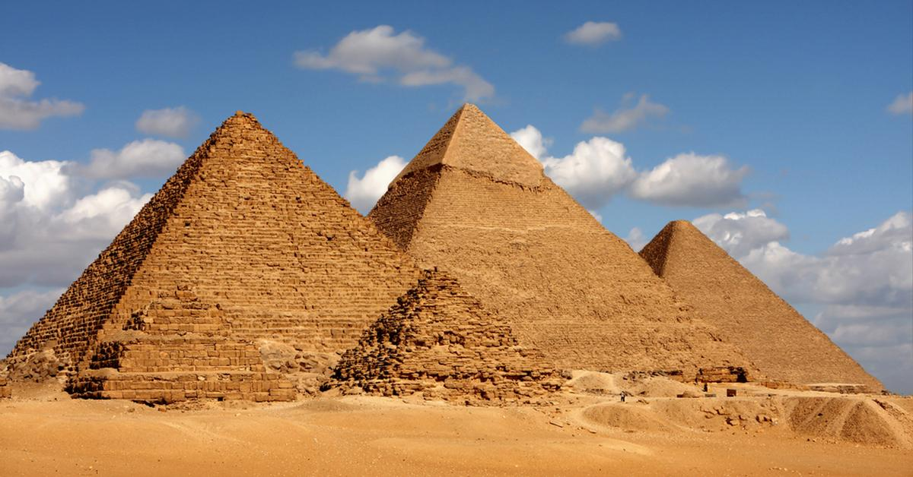

Piramidy w Gizie
Piramidy w Gizie to starożytne budowle w Egipcie, z trzema głównymi: Piramidą Cheopsa (Wielką Piramidą), Piramidą Chefrena i Piramidą Mykerinosa. To grobowce faraonów, z Piramidą Cheopsa jako największą (146 m wysokości), a Piramidą Chefrena i Mykerinosa mniejszymi. Te piramidy to część większego kompleksu grobowego zawierającego mastaby, świątynie i inne budowle. Są ikonami starożytnego Egiptu, symbolizują potęgę i tajemnicę tamtej epoki.
Powrót do Menu
